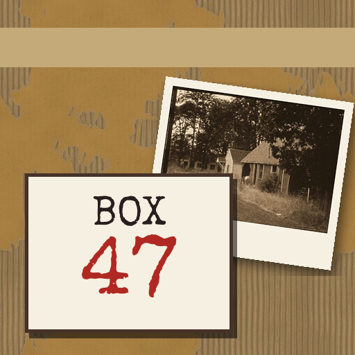

<- all projects

Box 47
PC
Volume
Live
Type a word. Open a file. Find what a small-town sheriff buried in 1977.
Calder County hired you to scan the old sheriff's archive before it goes to the shredder. On the first shelf sits a sealed box marked 47: DO NOT REOPEN. Inside is the case of Ruth Ann Kessler, a diner waitress who vanished in June 1977, closed in eleven days. Type a name, place, car or plate into the archive terminal, read the first five matching files and click any word to search it next. Pin the right fact to each question, but three wrong pins send the box back. There are six written cases from 1958 to 1994, endless generated boxes and a daily box.